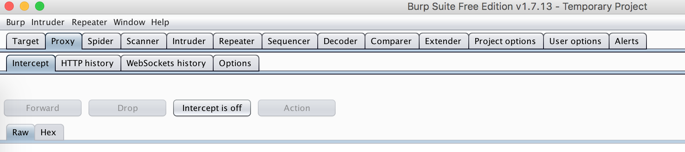
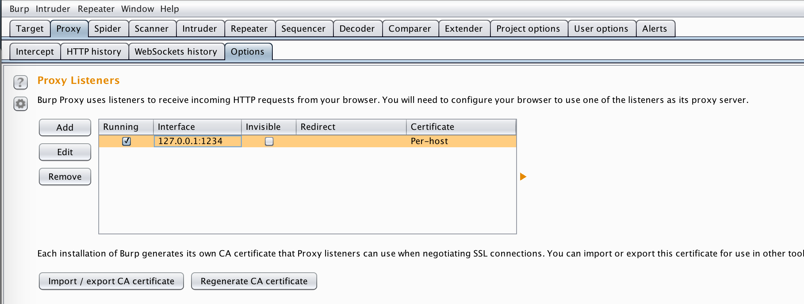
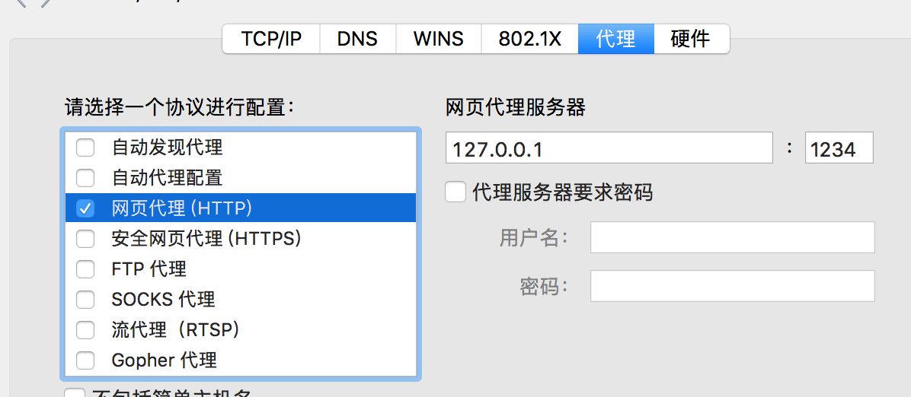
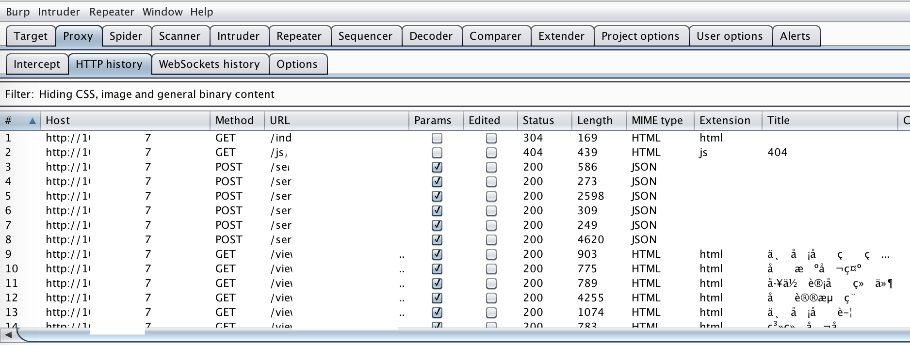
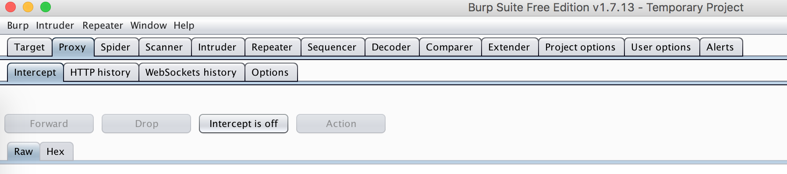
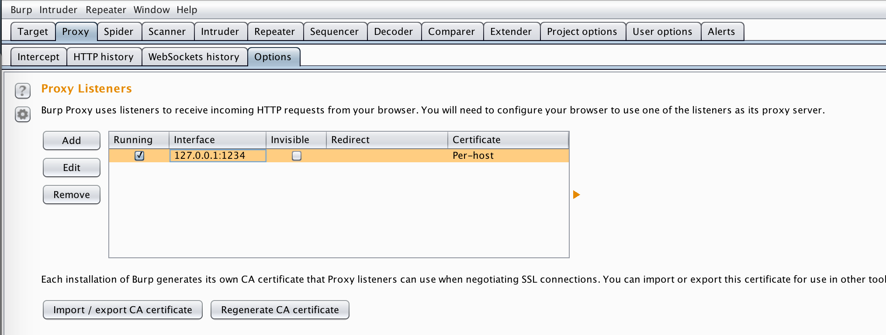
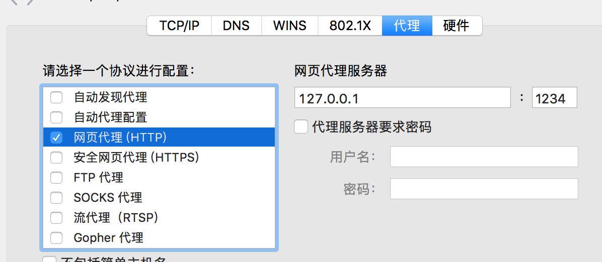
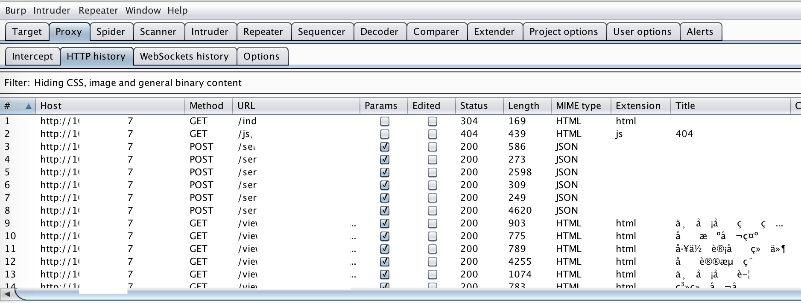

burpsuite
简介
官网https://portswigger.net/burp，可以下载免费社区版。
使用
1、启动：直接通过java命令执行jar包。
2、设置Intercept is off：Proxy->Intercept
设置Intercept is off（关掉拦截）

3、设置代理端口 
4、配置浏览器代理 
5、再访问相关页面就可以获取到请求信息 
官网https://portswigger.net/burp，可以下载免费社区版。
1、启动：直接通过java命令执行jar包。
2、设置Intercept is off：Proxy->Intercept
设置Intercept is off（关掉拦截）

3、设置代理端口 
4、配置浏览器代理 
5、再访问相关页面就可以获取到请求信息 